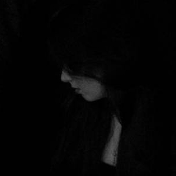

Gabby McCullough

Gabby McCullough was born of scrawled ink blotched onto a paper, pieced together by inane scribblings and
word doodles. Enchanted with the idea of entrapping emotions into meaningful squiggles, she employs written
word as a refuge, penning pain neatly into discrete units which, once united, ultimately explicate. Clemens is
fascinated by the role of the writer, unable to decide whether phrases are created and conjured by a writer, or
whether a scribe is merely a conduit of predestined vocals waiting in the shadows to be birthed in scripted speech,
never abandoning the possibility that the truth lies in a tumultuous marriage between the two. Her favorite pairing
of words is the bittersweet utterance “asinine invocation,” which she believes encapsulates the miserable hope which
propagates the human condition.